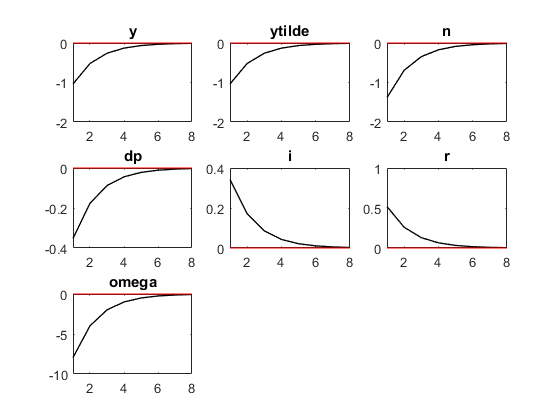
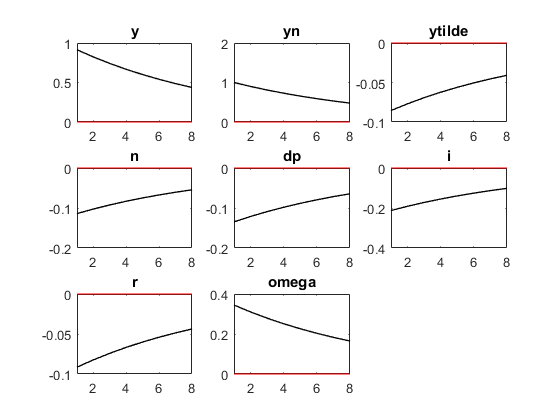
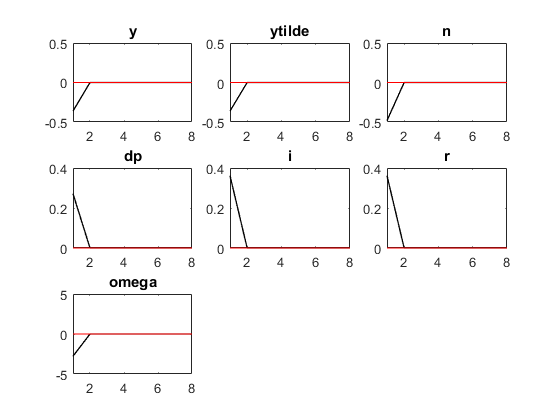

<!doctype html>
<html lang="en">

	<head>
		<meta charset="utf-8">

		<title>reveal.js - Class 11</title>

		<link rel="stylesheet" href="plugin/reveal.css">
		<link rel="stylesheet" href="plugin/black2.css" id="theme">
        <link rel="stylesheet" href="plugin/monokai.css">
        <link rel="stylesheet" href="plugin/title-footer.css">
       
	</head>

	<body>

		<div class="reveal">

			<div class="slides">


                <!-- Slides are separated by three dashes (quick 'n dirty regular expression) -->
                <section data-markdown data-separator="\n---\n" data-separator-vertical="^\n--\n">
                    <script type="text/template">
                        <!-- .slide: style="text-align: left;" -->
                        ## Macroeconomic Theory
                        ### Francesco Franco - Nova SBE
                        #### T3 2023 

                        ---

                        <!-- .slide: style="text-align: left;" -->
                        ## Simulation of a NKM in Dynare

                        Simulate the NKM specifying all the necessary conditions for optimality. So instead of reducing to the 3 equations model we are keeping most of the equations.

                        Declare the endogenous variables

                            var c i dp z n r y omega mu yn ytilde rn v pstar_p;

                        Declare the exogenous variables here the shocks (monetary, tfp and push cost)

                            varexo eps_v eps_z eps_p;

                        ---

                        <!-- .slide: style="text-align: left;" -->
                        ## Simulation of a NKM in Dynare

                        The functional forms are the usual $$\frac{C_{t}^{1-\sigma}-1}{1-\sigma}-\frac{N_{t}^{1+\varphi}}{1+\varphi}$$

                        and
                        
                        $$Y_{t}(i)=Z_{t}N_{t}(i)^{1-\alpha}$$

                        You also need to declare the parameters and give values.

                        ---

                        <!-- .slide: style="text-align: left;" -->
                        ## Simulation of a NKM in Dynare
                        
                        Let us list all the equations of the model.

                        First the Households foc:

                        $$w_{t}-p_{t}=\sigma c_{t}+\varphi n_{t}$$ 
                        $$c_{t}=E_{t}\{c_{t+1}\}-\frac{1}{\sigma}(i_{t}-E_{t}\{\pi_{t+1}\}-\rho)$$

                        ---

                        <!-- .slide: style="text-align: left;" -->
                        ## Simulation of a NKM in Dynare
                        
                        The price setting conditions of the firms:
                        
                        `$$p_{t}^{*}-p_{t-1}=(1-\beta\theta)\left(\Theta\left(\mu-\mu_{t}\right)\right)+(p_{t}-p_{t-1})+\beta\theta E_{t}(p_{t+1}^{*}-p_{t})$$`

                        with the price index
                        $$\pi_{t}=p_{t}-p_{t-1}=(1-\theta)\left(p_{t}^{*}-p_{t-1}\right)$$


                        ---

                        <!-- .slide: style="text-align: left;" -->
                        ## Simulation of a NKM in Dynare

                        The goods market equilibrium
                        $$c_t = y_t$$

                        The policy equation
                        
                        $$i_{t}=\rho+\phi_{\pi}\pi_{t}+v_{t}$$

                        and the DGP of the shocks for example
                        $$z_t = \rho_z z_{t-1} + \epsilon_t$$

                        you can also keep track of auxiliary variables.

                          


                        ---

                        <!-- .slide: style="text-align: left;" -->
                        ## Simulation of a NKM in Dynare

                        Declare the model block of the log-linerized equations

                            model(linear);
                                omega = sigma*c + phi*n;
                                c = c(+1) - 1/sigma*(i + log(beta) - dp(+1));       
                                y  = z + n*(1-alpha);
                                pstar_p = -(1-beta*theta)*Big_theta*(mu - mu_ss) + dp + beta*theta*pstar_p(+1) + eps_p;
                                mu = -omega + z -alpha*n + log(1-alpha);
                                dp   = (1-theta)*pstar_p;               
                                y = c;
                                i = -log(beta) +phi_pi*dp + phi_y*ytilde +v;
                                r = i - dp(+1);
                                ytilde = y - yn;
                                yn = psi_yz*z + psi_y;
                                rn = -log(beta) - sigma*(1-rho)*psi_yz*z;
                                v = rho_v*v(-1) + eps_v;
                                z =  rho*z(-1) + eps_z;
                            end;

                        ---

                        <!-- .slide: style="text-align: left;" -->
                        ## Simulation of a NKM in Dynare

                        Declare the shocks

                            shocks;
                            var eps_v; stderr 1;
                            var eps_p; stderr 1;
                            var eps_z; stderr 1;
                            end;

                        ---

                        <!-- .slide: style="text-align: left;" -->
                        ## Simulation of a NKM in Dynare

                        Declare the steady state

                            steady_state_model;
                            r = -log(beta);
                            dp  =0;
                            y = psi_y;
                            n = y/(1-alpha);
                            i = r;
                            c = y;
                            mu = mu_ss;
                            yn = y;
                            ytilde = 0;
                            z = 0;
                            rn = -log(beta);
                            omega = sigma*c + phi*n;
                            v = 0;
                            pstar_p = 0;
                            end;

                        ---

                        <!-- .slide: style="text-align: left;" -->
                        ## Simulation of a NKM in Dynare

                        Check the existence and uniqueness of the solution

                            check;
                        Here 3 jump variables: $y$, $c$ and $\pi$ so you need 3 eigenvalues greater than 1

                        and solve and plot the IRF

                            stoch_simul(irf=8,order=1,nomoments) ytilde dp i y yn n;


                        ---

                        <!-- .slide: style="text-align: left;" -->
                        ## Simulation of a NKM in Dynare

                        The effects of monetary policy contraction

                        <center></center>


                        ---

                        <!-- .slide: style="text-align: left;" -->
                        ## Simulation of a NKM in Dynare

                        The effects of a positive tfp shock

                        <center></center>


                        ---

                        <!-- .slide: style="text-align: left;" -->
                        ## Simulation of a NKM in Dynare

                        The effects of a cost push shock

                        <center></center>

                        ---

                        <!-- .slide: style="text-align: left;" -->
                        ## How to choose optimally the monetary response

                        You maximize the welfare
                        
                        $$\mathbb{W}\mathbb{\equiv}E_{0}\sum_{t=0}^{\infty}\beta^{t}U\left(C_{t},N_{t}\right)$$
                        
                        which can be casted in minimization of
                        
                        `$$\mathbb{L=}\frac{1}{2}\left[\left(\sigma+\frac{\varphi+\alpha}{1-\alpha}\right)var(\widetilde{y}_{t})+\epsilon\ var(\pi_{t})\right]$$`

                        subject to the NKPC constraint.

                        


                
                        
                    </script>
                </section>

            </div>
		</div>

		<script src="plugin/reveal.js"></script>
        <script src="plugin/markdown.js"></script>
        <script src="plugin/highlight.js"></script>
        <script src="plugin/notes.js"></script>
        <script src="plugin/plugin.js"></script>
        <script src="plugin/math.js"></script>
        <script src="plugin/plugin.js"></script>
        <script src="plugin/menu.js"></script>
        <script src="plugin/pdfexport.js"></script>

		<script>

			Reveal.initialize({
				controls: true,
				progress: true,
				history: true,
                center: true,
                touch: true,
                dependencies:
                [
                    { src: 'plugin/title-footer.js', async: true, callback: function() { title_footer.initialize(); } }
                ],
                math: {
                    mathjax: 'https://cdn.jsdelivr.net/gh/mathjax/mathjax@2.7.8/MathJax.js',
                    config: 'TeX-AMS_HTML-full',
                    // pass other options into `MathJax.Hub.Config()`
                    TeX: { Macros: { RR: "{\\bf R}" } }
                    },
        
                chalkboard: {
                    boardmarkerWidth: 3,
                    chalkWidth: 3,
                    chalkEffect: 0.0,
                    src: null,
                    readOnly: false,
                    toggleChalkboardButton: { left: "90px", bottom: "30px", top: "auto", right: "auto" },
                    toggleNotesButton: { left: "60px", bottom: "30px", top: "auto", right: "auto" },
                    transition: 800,
                    theme: "whiteboard",
                    background: [ 'rgba(127,127,127,.1)' , path + 'img/blackboard.png' ],
                    //grid: { color: 'rgb(50,50,10,0.5)', distance: 80, width: 0.5},
                    eraser: { src: path + 'img/sponge.png', radius: 20},
                    boardmarkers : [
                            { color: 'rgba(255,255,255,0.5)', cursor: 'url(' + path + 'img/chalk-white.png), auto'},
                            { color: 'rgba(30,144,255, 1)', cursor: 'url(' + path + 'img/boardmarker-blue.png), auto'},
                            { color: 'rgba(220,20,60,1)', cursor: 'url(' + path + 'img/boardmarker-red.png), auto'},
                            { color: 'rgba(50,205,50,1)', cursor: 'url(' + path + 'img/boardmarker-green.png), auto'},
                            { color: 'rgba(255,140,0,1)', cursor: 'url(' + path + 'img/boardmarker-orange.png), auto'},
                            { color: 'rgba(150,0,20150,1)', cursor: 'url(' + path + 'img/boardmarker-purple.png), auto'},
                            { color: 'rgba(255,220,0,1)', cursor: 'url(' + path + 'img/boardmarker-yellow.png), auto'}
                    ],
                    chalks: [
                            { color: 'rgba(255,255,255,0.5)', cursor: 'url(' + path + 'img/chalk-white.png), auto'},
                            { color: 'rgba(96, 154, 244, 0.5)', cursor: 'url(' + path + 'img/chalk-blue.png), auto'},
                            { color: 'rgba(237, 20, 28, 0.5)', cursor: 'url(' + path + 'img/chalk-red.png), auto'},
                            { color: 'rgba(20, 237, 28, 0.5)', cursor: 'url(' + path + 'img/chalk-green.png), auto'},
                            { color: 'rgba(220, 133, 41, 0.5)', cursor: 'url(' + path + 'img/chalk-orange.png), auto'},
                            { color: 'rgba(220,0,220,0.5)', cursor: 'url(' + path + 'img/chalk-purple.png), auto'},
                            { color: 'rgba(255,220,0,0.5)', cursor: 'url(' + path + 'img/chalk-yellow.png), auto'}
                    ]
                },
                

				plugins: [ RevealMarkdown, RevealHighlight, RevealNotes,RevealMath, RevealMenu, RevealChalkboard, PdfExport]
			});

		</script>

	</body>
</html>
